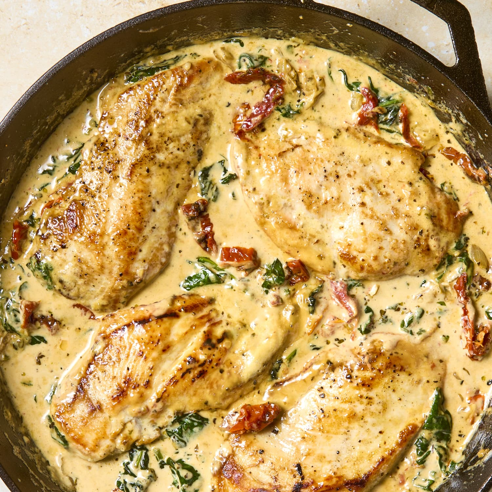

Tuscan Chicken

Description
This creamy tuscan chicken tastes like it is straight from a restaurant.
Lovely combination of cream, sundried tomatoes, garlic and parmesan. You could also add pasta into the sauce for a change.
Ingredients
- 2 tbps olive olive
- 500 grams thinly sliced chicken breast
- 1 cup cream
- 1/2 cup chicken broth
- 1 tsp garlic powder
- 1 tsp italian seasoning
- 1/2 cup grated parmesan cheese
- 1 cup chopped spinach
- 1/2 cup drained sundried tomatoes
Steps
- In a large skillet over medium high heat, add 2 tbps olive oil.
- Cook the chicken for 3-4 minutes on each side until cooked through.
- Remove the chicken and set aside on a plate.
- Add cream, chicken broth, garlic powder, italian seasoning and parmesan cheese to the skillet
- Whisk over a medium-high heat until it starts to thicken - about 4-5 minutes.
- Add chopped spinach and sundried tomatoes and continue to cook for 1-2 mins until spinach starts to wilt.
- Add the chicken back to the pan until heated through and serve over pasta if desired.
Home